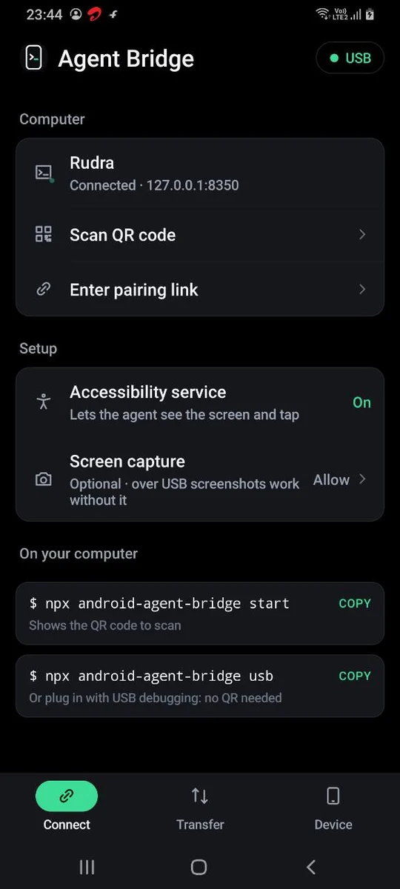
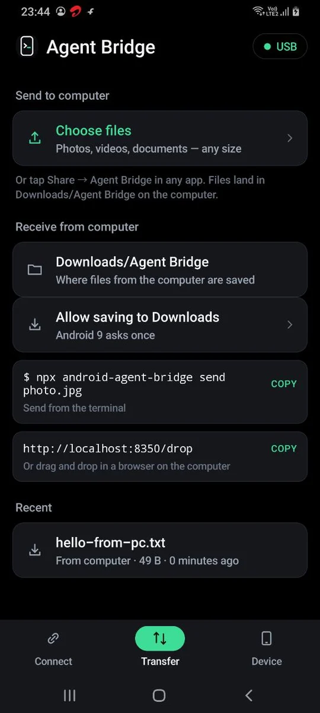
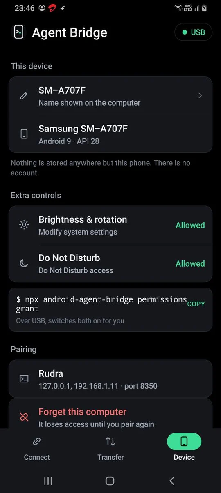

Sees the screen
A numbered list of every button, field and text on screen, plus screenshots with each element boxed. It knows what's hidden under sheets and dialogs.
Open source · MIT · Android 5.0+
Claude Code, Cursor, Antigravity or any MCP agent can read your Android screen, tap, type, open apps, change settings and move files. Pair once with a QR code over Wi-Fi, or plug in USB.
npx github:Rudrasamadhiya/android-agent-bridge start

Setup
Plug the phone in with USB debugging on. The CLI installs the app and switches it on.
npx github:Rudrasamadhiya/android-agent-bridge usbStart the bridge, open Agent Bridge on the phone and scan. After that it reconnects by itself.
npx github:Rudrasamadhiya/android-agent-bridge startAdd the MCP server to your project, restart your agent, and ask it to use the phone.
npx github:Rudrasamadhiya/android-agent-bridge initWhat it can do
A numbered list of every button, field and text on screen, plus screenshots with each element boxed. It knows what's hidden under sheets and dialogs.
Tap by number, text or position, type into fields without the keyboard, scroll, swipe, long-press, press Back and Home, open any app by name.
Many apps hide tab bars and buttons from accessibility. On-device OCR reads the pixels, so “tap Account” still works. Nothing leaves the phone.
Volume for every stream, brightness, flashlight, rotation, Do Not Disturb, any settings page, links and deep links, battery and notifications.
Send from the terminal or a drag-and-drop page to the phone; share from any phone app to the computer. Streams any size.
Works back to Android 5.0 (2015). Where old Android can't do something itself, the computer does it over USB.
The app
Pair, check the connection, move files, and decide what the agent may touch. That's all it does.


Transfer
send photo.jpg, or drag files onto localhost:8350/drop. They land in Downloads/Agent Bridge.phone_send_files and phone_received_files.# phone = npx github:Rudrasamadhiya/android-agent-bridge $ phone send report.pdf Sent report.pdf (2.4 MB) → phone: Downloads/Agent Bridge/report.pdf $ phone received Folder: C:\Users\you\Downloads\Agent Bridge 29/10/2026, 11:45 pm 3.1 MB IMG_20261029.jpg 29/10/2026, 11:41 pm 48.2 KB receipt.pdf
For agents
Run init in your project, or add this to any MCP client. The agent gets tools like phone_screen, phone_tap, phone_type, phone_open_app, phone_volume and phone_send_files, plus a short guide on using them safely.
{
"mcpServers": {
"phone": {
"command": "npx",
"args": ["-y", "github:Rudrasamadhiya/android-agent-bridge"]
}
}
}
Security & privacy
Only a computer holding the secret from your QR code can connect. Make a new one any time with pair --reset.
The phone talks to your computer over Wi-Fi or USB. No cloud, no account, no analytics. OCR runs on the phone.
Turn off Agent Bridge's accessibility service and access ends at once. Forget the computer from the app.
The bundled guide tells agents to ask before sending, paying, posting or deleting, and never to type passwords.
FAQ
Google blocks sideloaded apps that use accessibility when they are opened from a browser or chat app. Install over USB instead: npx github:Rudrasamadhiya/android-agent-bridge usb. After that, Wi-Fi works too.
No. It relies on Android's accessibility service, which iOS does not offer to apps.
Those apps block screenshots, so the screen comes out black. Their element list often still works, but some screens stay off-limits by design.
Only to install the app the first time. Day to day it works over the same Wi-Fi or a hotspot. On Android 5 and 6, tapping by position also needs USB.
Nothing. It's open source under the MIT license.